BIND9 configuration showcase — standing up a Raspberry Pi 5 as the secondary, failover DNS resolver for the MTPortfolio lab network.
The Raspberry Pi 5 serves as the secondary (backup) DNS server for the MTPortfolio lab network, running BIND9 (Berkeley Internet Name Domain). It acts as a failover DNS resolver, forwarding external internet queries to upstream resolvers when the primary DNS server is available, and handling all DNS resolution when the primary goes offline.
All client devices across VLAN 10, VLAN 20, and VLAN 40 are configured to use the Windows Server DC at 192.168.20.10 as their primary DNS server, with the Raspberry Pi 5 BIND9 at 192.168.10.5 as the secondary backup DNS.
| Component | Details |
|---|---|
| Hardware | Raspberry Pi 5 |
| Operating System | Raspberry Pi OS |
| DNS Software | BIND9 (Berkeley Internet Name Domain) |
| Network Interface | eth0 (wired Ethernet) |
| Static IP Address | 192.168.10.5 |
| VLAN | VLAN 10 — Servers (192.168.10.0/24) |
| Switch Port | 2950 (Switch001) Fa0/4 |
| Hostname | RPI-DNS |
The DNS chain for the MTPortfolio lab works as follows:
| Query Type | Queries | Forwards To | Resolves |
|---|---|---|---|
| External / Internet | 192.168.10.5 (BIND9) | 8.8.8.8 / 1.1.1.1 (Google & Cloudflare) | Public internet hostnames (failover) |
| Internet / external | 192.168.10.5 (BIND9) | 8.8.8.8 / 1.1.1.1 | Public internet hostnames |
Before configuring BIND9, the Raspberry Pi 5 must be assigned a static IP address on VLAN 10. This ensures the DNS server is always reachable at a predictable address across the network.
sudo nano /etc/dhcp/dhclient.conf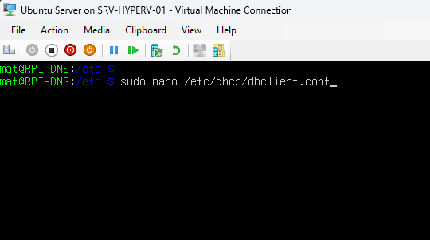
Reviewing the default configuration file before adding the static interface block:
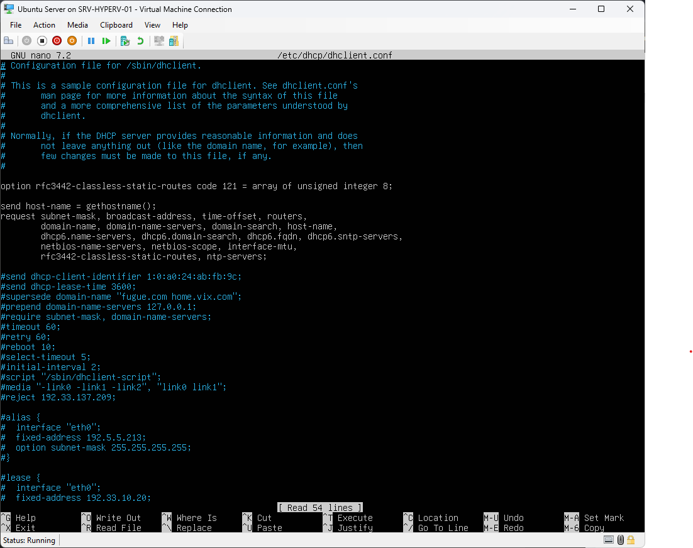
Adding the static interface definition to the bottom of the file:
interface "eth0" {
send host-name "RPI-DNS";
supersede domain-name-servers 127.0.0.1, 192.168.20.10;
supersede routers 192.168.10.1;
supersede subnet-mask 255.255.255.0;
fixed-address 192.168.10.5;
}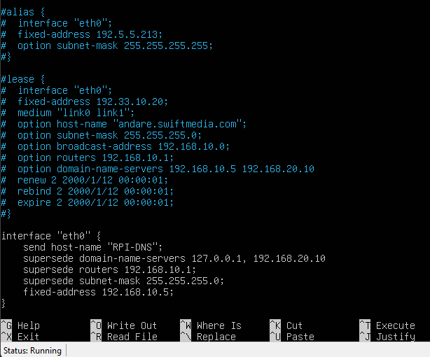
Note: The DNS server points to itself (127.0.0.1) as primary since it runs BIND9, with the Windows Server DC as secondary.
reboot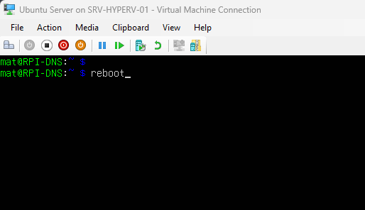
ip addr show eth0
# Expected output:
# inet 192.168.10.5/24 brd 192.168.10.255 scope global noprefixroute eth0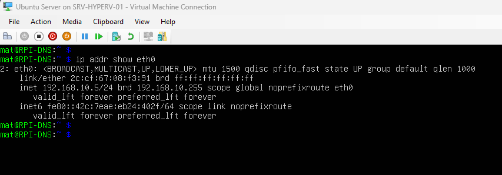
sudo apt update && sudo apt upgrade -y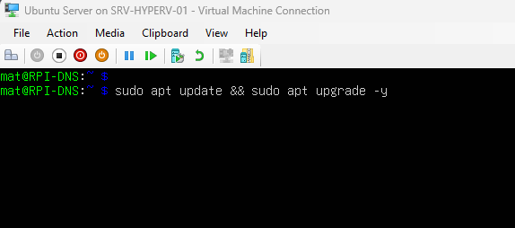
sudo apt install bind9 bind9utils bind9-doc -y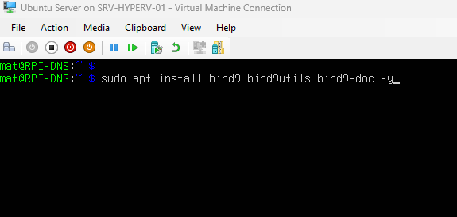
Verifying the installation:
named -v
# Should return: BIND version information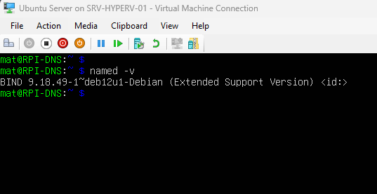
BIND9 uses two primary configuration files that need to be edited for the MTPortfolio lab environment:
sudo nano /etc/bind/named.conf.options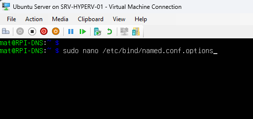
The default template before edits:
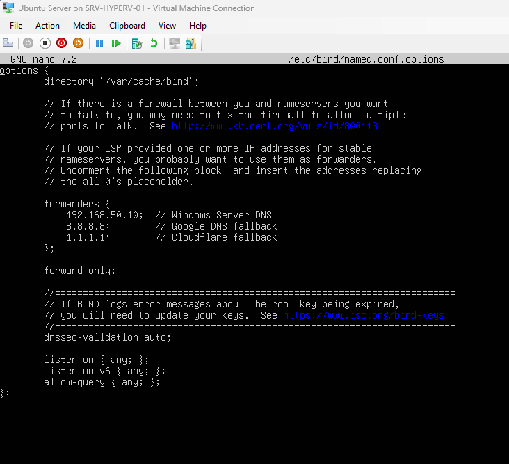
Replacing the contents with the corrected configuration — forwarders pointed at Google and Cloudflare, with queries restricted to lab subnets only:
options {
directory "/var/cache/bind";
// Forwarders — where BIND9 sends queries it cannot resolve locally
forwarders {
8.8.8.8; // Google DNS
1.1.1.1; // Cloudflare DNS fallback
};
forward only;
dnssec-validation auto;
listen-on { any; };
listen-on-v6 { any; };
// Restrict queries to lab subnets only
allow-query {
192.168.10.0/24; // VLAN 10 Servers
192.168.20.0/24; // VLAN 20 Infrastructure
192.168.40.0/24; // VLAN 40 Clients
192.168.50.0/24; // Management subnet
127.0.0.1; // Localhost
};
};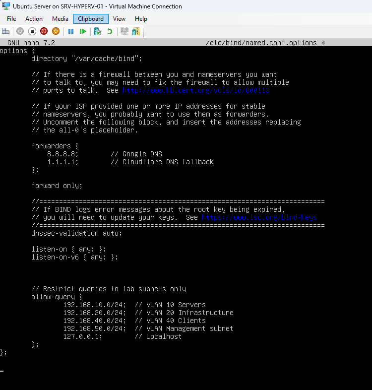
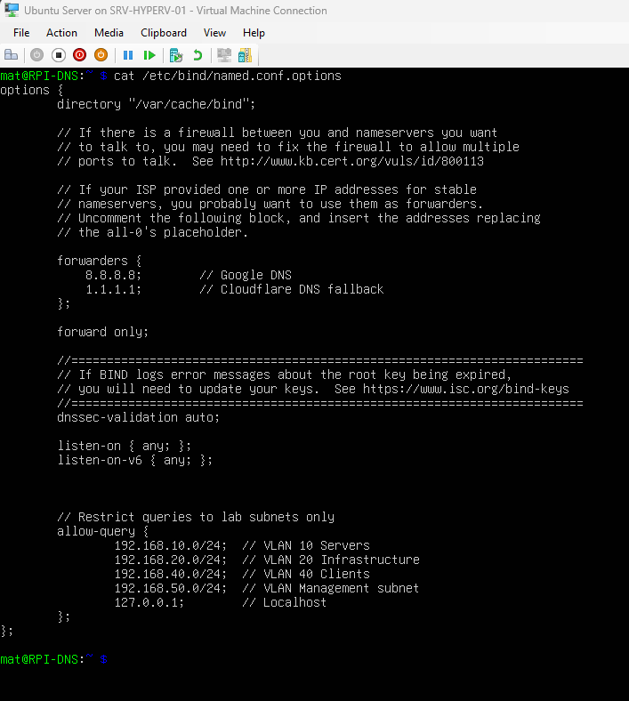
cat /etc/bind/named.conf.options.sudo nano /etc/bind/named.conf.local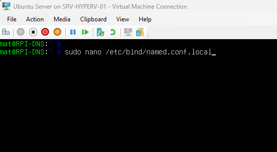
// MTPortfolio Lab DNS Configuration
// BIND9 named.conf.local
// No internal zones defined — Pi handles external resolution only
// Internal mtlab.local resolution is handled by the Windows Server DC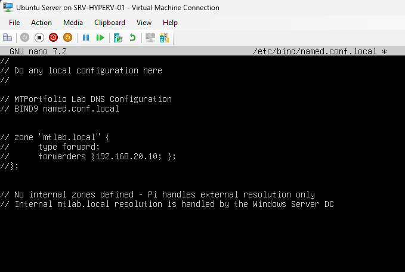
Note: The named.conf.local file contains no zone definitions. The Pi does not handle internal mtlab.local resolution — that remains the responsibility of the Windows Server DC as the authoritative primary DNS. The Pi forwards all external queries to upstream public resolvers and serves as a failover DNS only.
Always check the configuration syntax before restarting BIND9:
sudo named-checkconf
# No output means configuration is valid
# Any errors will be displayed with line numbers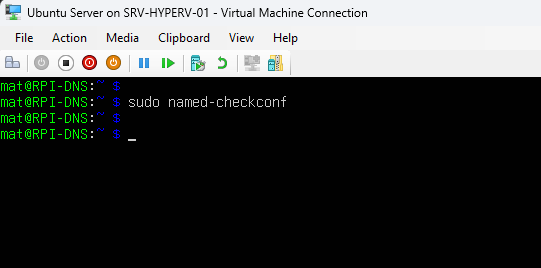
sudo systemctl unmask bind9
sudo systemctl enable bind9
sudo systemctl start bind9
sudo systemctl restart bind9
sudo systemctl status bind9
sudo systemctl status named
# Both bind9 and named should show active (running)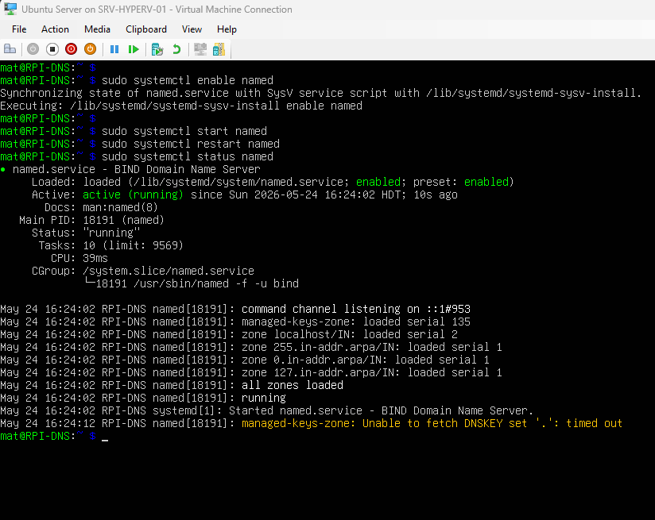
The "Unable to fetch DNSKEY" line at the bottom is a routine root-key refresh timeout and does not affect DNS resolution.
# Test internet resolution
nslookup google.com 127.0.0.1
# Test using dig
dig @127.0.0.1 google.comFrom any client device on the lab network, verify DNS resolution through the Pi:
# Windows client (Command Prompt or PowerShell)
nslookup google.com 192.168.10.5
# Linux / Raspberry Pi
dig @192.168.10.5 google.comCommands to check and manage the BIND9 DNS service at any time:
| Command | Purpose |
|---|---|
sudo systemctl status bind9 | Check BIND9 service status |
sudo systemctl restart bind9 | Restart BIND9 after config changes |
sudo named-checkconf | Verify configuration file syntax |
sudo rndc flush | Flush the DNS cache |
sudo rndc status | Show BIND9 runtime status |
dig @192.168.10.5 google.com | Test internet DNS resolution |
dig @192.168.10.5 cloudflare.com | Test external DNS resolution (Cloudflare) |
tail -f /var/log/syslog | grep named | Monitor BIND9 logs in real time |
ip addr show eth0 | Verify static IP assignment |
| Setting | Value |
|---|---|
| IP Address | 192.168.10.5 |
| Subnet Mask | 255.255.255.0 (/24) |
| Default Gateway | 192.168.10.1 (3550 VLAN 10 SVI) |
| Primary DNS | 127.0.0.1 (self — BIND9) |
| Secondary DNS | 192.168.20.10 (Windows Server DC) |
| VLAN | VLAN 10 — Servers |
| Switch Port | 2950 (Switch001) Fa0/4 |
| Hostname | RPI-DNS |